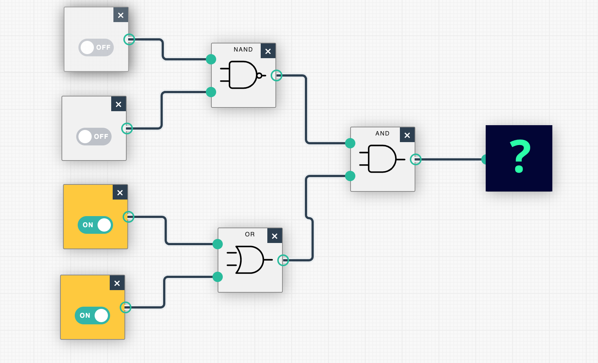

Home
About Us
Theory
Procedure
Simulation
Quiz
Universal Gates Quiz
What is the basic operation of a NAND gate?
a) Opposite of AND
b) Opposite of OR
c) NOT
d) XOR
How many inputs and outputs does a standard 2-input NAND gate have?
a) 1 input, 1 output
b) 2 inputs, 1 output
c) 1 input, 2 outputs
d) 2 inputs, 2 outputs
A NAND gate is considered a universal gate because it can be used to implement:
a) Only AND and OR functions
b) Any logic function
c) Only NOT function
d) Only XOR function
Which of the following logic gates can be represented using only NAND gates?
a) AND
b) OR
c) NOT
d) All of the above
To implement an OR gate using NAND gates, you would connect the inputs of the NAND gate to:
a) The OR gate's inputs directly
b) The OR gate's inputs through a NOT gate
c) The OR gate's outputs
d) The OR gate's inputs in a specific arrangement
Which of the following is the other name for NOR gate?
a) Negated OR
b) NOT OR
c) NOT AND
d) Both A and B
Which of the following is the output of NOR gate when inputs are (00)?
a) 0
b) 1
c) X
d) None of these
In the diagram below, will the output indicated by the question mark be 0 or 1?

a) 0
b) 1
Which logic gate is the complement of a NAND gate?
a) AND
b) OR
c) NOT
d) XOR
Your Quiz Results
Score:
0
/10